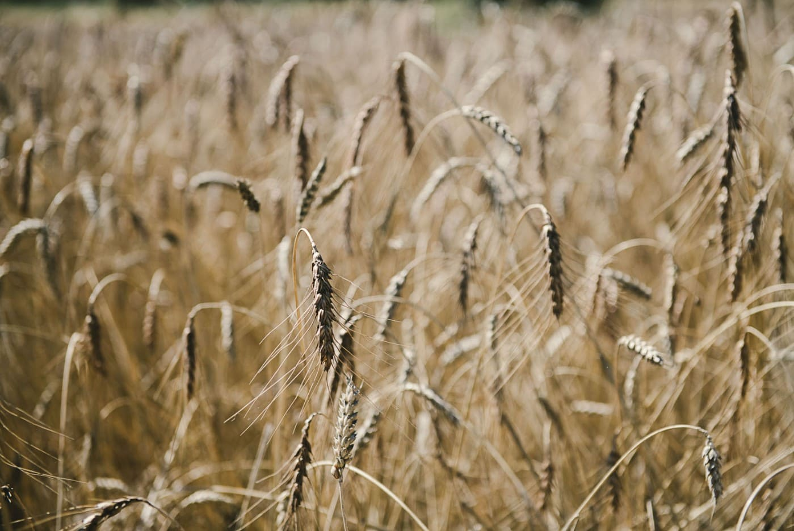

Parce que la transition écologique et sociale de l'agroalimentaire exige des outils à la hauteur de ses enjeux, nous accompagnons les acteurs engagés vers des modèles plus justes, sains et résilients.
Nous sommes convaincus que la transformation de notre système alimentaire ne se joue pas uniquement dans les champs. Elle dépend aussi de la robustesse des chaînes de production, de logistique et de distribution.
C’est ici que nous intervenons : en mettant toute la puissance et la flexibilité de l'ERP Odoo au service de l’agroécologie, de l'agriculture régénérative et des circuits de proximité. Nous dotons les filières responsables des mêmes armes technologiques que l'industrie classique.

Prouver qu’un outil de gestion complet peut être à la fois ultra-performant, accessible, et radicalement aligné avec les principes de la transition écologique. Nous œuvrons chaque jour pour devenir le partenaire technologique de confiance des acteurs de l'agroécologie.
« Nous ne sommes pas de simples intégrateurs logiciels. Nous sommes des artisans du numérique, mobilisés pour doter l'agriculture de demain des meilleurs outils de gestion. »